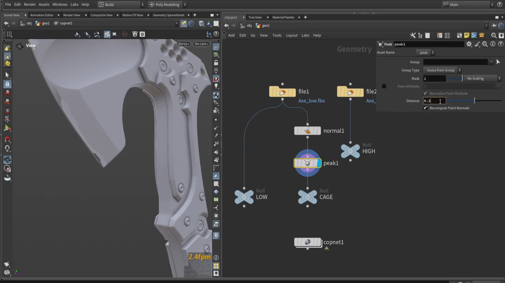
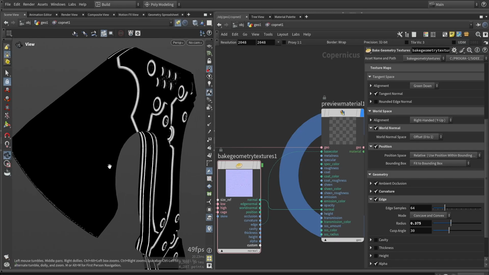

Houdini で斧を作る 7 — ケージを作ってマップをベイクする
出典: Axe Texturing: full breakdown of COPs texturing in Houdini （Simon Houdini さん / 1:04:35 / 英語）の 7:18〜20:40 部分。 このページは、上記の動画を見ながら自分用にまとめた日本語の学習メモです。作者公式の翻訳ではありません。 前回はCopernicus でテクスチャリングを始めるでした。
この記事で扱うこと
ベイクの精度を上げる工程です。ワークライトを整え、ケージを作り、 必要なマップを選んで焼きます。最後にUV の縁が出る問題を解決します。
1. ワークライト
ビューポートで右クリックすると、表示の設定が出てきます。
- Ambient Occlusion — 有効にすると見栄えがよくなります
- Shadows — 用途によっては強すぎることがあります。 動画では切っていました
Dome Light Setup
採用されていたのは Dome Light Setup です。 プロパティを開くと HDR マップが必要になります。 他のレンダリングソフトと同じく、環境マップで照らす方式です。
メニューを開くと Houdini 標準の HDRI が並んでいるので、そこから選べます。 マップを切り替えると設定項目がさらに増える、いわば隠しメニューのような領域もあるとのことでした。
Physical Sky Light に切り替えると、また違う見え方になります。 好みで選べばよさそうです。
2. ケージを作る

ベイクがうまくいかないとき——動画の言葉では「当たったり外れたり」する状態のとき——に使うのが
ケージです。ベイクノードの設定を Cage Mesh に切り替えて使います。
その前に確認すること
あまり触れられていない点ですが、スケールの違いには注意が必要です。 モデルを読み込んだとき、スケールが合っているか確かめてください。
ケージとは
ケージはモデルより少しだけ大きい形です。 「モデルの周りに少し縁がある」くらいの膨らみを持たせます。
簡単な作り方
上の画像のネットワークがその手順です。
file1 (Axe_low.fbx) → normal1 → peak1 → CAGE (Null)
└→ LOW (Null)Normalで法線を再計算します。 このとき、頂点（vertex）ではなくポイント単位で計算するのが肝ですPeakで法線方向に膨らませます
Peak のパラメータで重要なのは2つです。
| パラメータ | 設定 |
|---|---|
Distance | 膨らませる量。画面では 0.2 |
Recompute Point Normals | 有効 |
ここは行ったり来たりして探る部分です。 0.2 を試して「これは効きますね」、次に 0.4 を試して 「私の場合はこれが良さそうです」という進め方をしていました。 モデルによって適切な値は変わります。
できたケージをベイクノードの cage 入力に繋ぐと、結果が変わります。 良くなる場合も悪くなる場合もあるので、 プレビューしながら判断することになります。
3. 必要なマップだけ焼く

ベイクノードには多くの出力がありますが、 既定ではほとんどがオフになっています。 計算時間を節約するためで、必要なものだけ有効にします。
| セクション | 主な項目 |
|---|---|
| Tangent Space | Alignment（Green Down）／Tangent Normal ／ Rounded Edge Normal |
| World Space | Alignment（Right-Handed (Y-Up)）／World Normal（Offset 0 to 1）／Position（Relative・Fit to Bounding Box） |
| Geometry | Ambient Occlusion ／ Curvature ／ Edge ／ Cavity ／ Thickness ／ Height ／ Alpha |
Edge マップの設定
上の画像で Edge の設定が読み取れます。ビューポートに白いエッジが浮かび上がっているのがその結果です。
| パラメータ | 値 |
|---|---|
| Edge Samples | 64 |
| Mode | Concave and Convex |
| Radius | 0.375 |
| Cusp Angle | 30 |
Radius を上げるとエッジが太くなります。 Cusp Angle はメッシュの角度が基準で、 下げる（例: 11）とより多くのエッジを拾います。
Convex と Concave を分けて使うこともできます。
Curvature マップと似ていますが、違うものです。 Curvature に慣れているなら Curvature を使えばいいと思います。 これから何をするかによって、どちらが便利かは変わります。
AO は既定でオンです。サンプル数と距離を調整できます。
4. カスタムアトリビュートを焼く — 色分けをマップにする
モデリング編で仕込んだ Cd の色分けを、
ここでマップとして取り出します。
- プラスアイコンをクリックして項目を追加します
- 名前に
Cdと入力します - 型を RGB にします
custom出力をプレビューすると、色分けされたマップが見えます
これがマテリアルを分けるためのマスクになります。
5. UV の縁が見える問題を直す
焼いたマップをよく見ると、UV シェルの境目が見えてしまいます。 Position マップなどでは特にはっきり出ます。
解像度を上げれば目立たなくはなりますが、根本的な解決ではありません。 実際には多くのパッケージがテクスチャ空間で色を外側に伸ばす処理をしています。
Copernicus にもこの機能があり、有効にすると UV シェルの外側に、同じ色が伸びて塗られます。 オンとオフを切り替えると、縁の処理が変わるのがはっきり分かります。
動画時点でのバグと回避策
この機能に不具合があったようで、回避策が紹介されていました。
SideFX が将来直すと思いますが、今のところ小さな回避策があります。 カスタムアトリビュートをもう1つ追加してください。 使う必要はありません。オフのままで構いません。少し待てば動きます。
custom は複数のデータを束ねている
custom 出力は複数のストリームを持てるようになっています。
複数のテクスチャがまとまって入っているので、
使うときはアンパックして取り出します。
これで縁のないきれいなマスクが焼けました。
この記事のまとめ
- ワークライトは Dome Light Setup ＋ Houdini 標準の HDRI が手軽です
- ベイクが不安定なときはケージを使います。まずスケールを確認します
- ケージは
Normal（ポイント単位）→Peakで作れます PeakのDistanceとRecompute Point Normalsが要点。値は試行錯誤で決めます- ベイクの出力は既定でほぼオフ。必要なものだけ有効にします
- Edge は Radius で太さ、Cusp Angle を下げると拾うエッジが増えます
- カスタムアトリビュートに
Cdを RGB で追加すれば、色分けがマスクになります - UV の縁は外側に色を伸ばす機能で解決します。動画時点では、ダミーのカスタムアトリビュートを1つ足す回避策が必要でした
custom出力は複数データの束なのでアンパックして使います
次はマスクを整理して、マテリアル用の HDA を組み立てていきます。